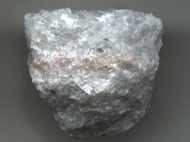
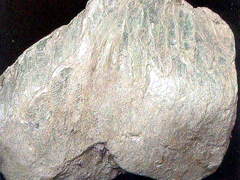
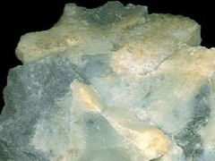
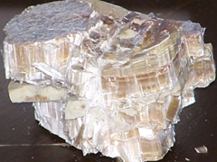
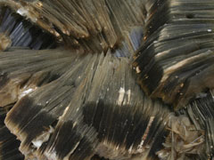
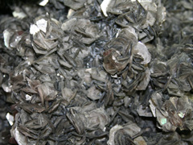
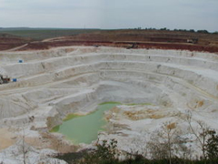
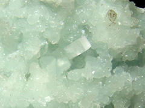
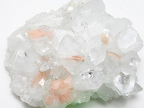

생성원리

정의 Definition
규산염은 금속원소와 다양한 구조를 가진 Si-O사면체(SiO2)가 결합한 화합물로 지각과 상부 맨틀의 90% 이상을 포함하고 있어, 그만큼 광물종도 다양하고 그 존재량도 많습니다. 규산염 중에서 필로규산염은 규산염 광물의 기본 구조 단위인 SiO4사면체의 결합방식이 인접하는 사면체가 3개의 산소를 공유하여 판 모양 형태의 층상 구조형을 띠고 있는 것을 말합니다.
종류 Class
총 8종의 이미지가 있습니다.


- 
- 
이름 (name)
활석(talc)
특 성 (characteristics)
- 가) 개요
- 마그네슘(Mg)이 다량 함유된 휘석(pyroxene), 각섬석(amphibole), 감람석(olivine) 등이 주로 교대광상이나 열수광상에서 변성되어 산출된다. 치밀한 섬유상의 형태로 얇은 판상 결정을 이루며, 경도가 매우 낮아 쉽게 긁힌다.
나) 화학식 : Mg3Si4O10(OH)2
(Mg:마그네슘, Si:규소, O:산소, OH-:수산화기)
- 다) 산출지 : __, __, 미국(사진좌측부터)
- (주요 생산국가 : 북아메리카지역, 중국 동북부, 프랑스, 이탈리아)
라) 물리화학적 성질
| 구분 | 설명 |
|---|---|
| cleavage(쪼개짐) | perfect |
| fracture(깨짐) | 고르지 않은 uneven한 형태로 표면이 부서짐 |
| color(색) | 흰색, 연녹색, 회백색, 회갈색 |
| density(밀도) | 2.7~2.8 |
| hardness(경도) | 1 |
| crystal system(결정계) | 단사정계 |
| luster(광택) | 진주광택 |
| streak(조흔색) | 흰색 |
- 마) 용도
- 활석가루 원료, 아트지 재료, 화장품, 내열재, 내산재, 전기절연체
- 
이름 (name)
엽랍석(pyrophyllite)
특 성 (characteristics)
- 가) 개요
- 알루미늄(Al)이 포함된 규산염이 수산화 되어 생성된 광물로, 활석(talc)과 같이 미끈미끈하고 경도가 낮으며 육안상의 형태도 활석과 유사하다. 결정질 편암 내에 활석, 홍주석(andalusite) 등과 함께 산출되며 결정이 매우 치밀하다.
나) 화학식 : Al2Si4O10(OH)2
(Al:알루미늄, Si:규소, O:산소, H:수소, OH-:수산화기)
- 다) 산출지 : 미국, 슬로바키아(사진좌측부터)
- (주요 생산국가 : 한국, 브라질, 인도, 일본, 캐나다, 호주)
라) 물리화학적 성질
| 구분 | 설명 |
|---|---|
| cleavage(쪼개짐) | perfect |
| fracture(깨짐) | 쉽게 잘 부스러짐 |
| color(색) | 갈녹색, 갈황색, 회녹색 |
| density(밀도) | 2.8 |
| hardness(경도) | 1.5 |
| crystal system(결정계) | 단사, 삼사정계 |
| luster(광택) | 진주광택 |
| streak(조흔색) | 흰색 |
- 마) 용도
- 인재(도장재료), 고무·살충제·페인트의 충진제, 도자기 원료, 공예품, 내화벽돌
이름 (name)
사문석(serpentine)
특 성 (characteristics)
- 가) 개요
- 마그네슘(Mg)과 철(Fe)이 함유된 필로 규산염 광물들의 집합체로, 판온석(antigorite)과 온석면(chrysotile), 리자르다이트(lizardite)가 대표적이다. 마그네슘과 철이 풍부한 사문암과 같은 초염기성 화성암에서 주로 산출된다. 단사정계이며, 경도가 낮은게 특징이다.
나) 화학식 : (Mg,Fe)3Si2O5(OH)4
(Mg:마그네슘, Fe:철, Si:규소, O:산소, OH-:수산화기)
- 다) 산출지 : 미국
- (주요 생산국가 : 캐나다 퀘벡, 러시아, 아프리카 남부, 중국)
라) 물리화학적 성질
| 구분 | 설명 |
|---|---|
| cleavage(쪼개짐) | 불확실 |
| fracture(깨짐) | brittle한 패각상, 표면이 매끈하게 조각난 형태로 발달 |
| color(색) | 녹색, 흰색, 노란색, 적색 |
| density(밀도) | 2.59 |
| hardness(경도) | 2.5~3 |
| crystal system(결정계) | 단사정계 |
| luster(광택) | 수지광택 |
| streak(조흔색) | 흰색 |
- 마) 용도
- 충전제인 브레이크라이닝, 내화성 섬유제품, 장식석, 인조비료 등에 이용되고, 마그네슘의 원광으로도 사용된다. 마그네슘은 로케트 제조용 경금속, 합금, 환원제, 섬광물질 등에 쓰인다.
- 
이름 (name)
온석면(chrysotile)
특 성 (characteristics)
- 가) 개요
- 마그네슘(Mg)을 함유한 필로 규산염 광물로, 사문석의 한 종류이다. 철(Fe)이 마그네슘으로 대부분 치환되어진 화학식을 가지며, 질이 좋은 것은 실이나 섬유재료로 이용된다. 마그네슘과 철이 풍부한 사문암과 같은 초염기성 화성암에서 판온석(antigorite), 리자르다이트(lizardite)와 함께 산출된다.
나) 화학식 : Mg3Si2O5(OH)4
(Mg:마그네슘, Si:규소, O:산소, OH-:수산화기)
- 다) 산출지 : 캐나다, 미국(사진좌측부터)
- (주요 생산국가 : 미국 캘리포니아, 캐나다 퀘벡, 이탈리아, 중국)
라) 물리화학적 성질
| 구분 | 설명 |
|---|---|
| cleavage(쪼개짐) | 불명료 |
| fracture(깨짐) | brittle한 패각상, 표면이 매끈하게 조각난 형태로 발달 |
| color(색) | 녹색계열, 회백색, 황색, 금색 |
| density(밀도) | 2.36~2.50 |
| hardness(경도) | 2~3 |
| crystal system(결정계) | 단사정계 |
| luster(광택) | 지방광택, 견사광택 |
| streak(조흔색) |
- 마) 용도
- 충전제인 브레이크라이닝, 내화성 섬유제품, 장식석, 인조비료 등에 이용되고, 마그네슘의 원광으로도 사용된다. 마그네슘은 로케트 제조용 경금속, 합금, 환원제, 섬광물질 등에 쓰인다.
- 
- 
이름 (name)
흑운모(biotite)
특 성 (characteristics)
- 가) 개요
- 어두운 색을 띠게 하는 마그네슘(Mg)과 철(Fe)이 함유된 운모(mica)계열의 필로 규산염 광물로, 칼륨(K)이온이 매우 약한 결합을 하고 있어 판상으로 완벽한 쪼개짐이 나타난다. 금운모(phlogopite)에 비해 철이 많아 ‘iron mica’ 라 하기도 하며, 백운모(muscovite)에 비해 어두워 ’black mica’ 라 하기도 한다.
나) 화학식 : K(Mg,Fe)3AlSi3O10(OH,F)2
(K:칼륨, Mg:마그네슘, Fe:철, Al:알루미늄, Si:규소, OH-:수산화기, F:불소)
- 다) 산출지 : 브라질
- (주요 생산국가 : 캐나다 온타리오, 미국, 영국, 러시아 등 곳곳에 분포)
라) 물리화학적 성질
| 구분 | 설명 |
|---|---|
| cleavage(쪼개짐) | perfect (탁월) |
| fracture(깨짐) | 고르지 않은 uneven한 형태로 표면이 부서짐 |
| color(색) | 암갈색, 녹갈색, 흑색, 흰색 |
| density(밀도) | 2.8~3.4 |
| hardness(경도) | 2.5~3 |
| crystal system(결정계) | 단사정계 |
| luster(광택) | 유리광택, 진주광택 |
| streak(조흔색) | 흰색 |
- 마) 용도
- 열이나 전기절연체, 종이 첨가제, 고무, 페인트
이름 (name)
질석(vermiculite)
특 성 (characteristics)
- 가) 개요
- 운모와 유사한 특성을 가지는 점토질의 규산염 광물로, 열에 따른 박리작용(exfoliation)에 의해 쉽게 팽창하여 벌레모양이 되며, 양이온의 교환능력도 매우 뛰어나다. 흑운모가 수화작용, 교대작용 등에 의해 변질되어 주로 산출된다. 유해한 전자파의 흡수력이 뛰어나고 내열성이 뛰어나며 경도가 낮은 점토성을 지녀 자유로운 주조가 가능하다.
나) 화학식 : (Mg,Fe,Al)3(Al,Si)4O10(OH)2·4(H2O)
(Mg:마그네슘, Fe:철, Al:알루미늄, Si:규소, O:산소, OH-:수산화기)
- 다) 산출지 : 미국
- (주요 생산국가 : 남아프리카공화국, 미국 북동부, 중국, 러시아)
라) 물리화학적 성질
| 구분 | 설명 |
|---|---|
| cleavage(쪼개짐) | 불명료 |
| fracture(깨짐) | 고르지 않은 uneven한 형태로 표면이 부서짐 |
| color(색) | 무색, 갈색, 황색, 녹색 |
| density(밀도) | 2.4 |
| hardness(경도) | 1.5 |
| crystal system(결정계) | 단사정계 |
| luster(광택) | 유리광택 |
| streak(조흔색) | 흰색 |
- 마) 용도
- 내장벽돌, 해독제, 흡음재, 생활바닥재, 내화재
- 
이름 (name)
고령석(kaolinite)
특 성 (characteristics)
- 가) 개요
- 판상 결정이 발달된 점토 광물로 china clay 또는 kaolin 으로 알려져 있다. 장석(feldspar)과 같은 알루미늄 규산염 광물이 화학적 풍화에 의해 생성되며, 대부분 부드럽고 백색을 띤다. 수분이 첨가되면 찰흙과 같이 연성이 생기며, 미량원소인 산화철의 함량에 따라 분홍에서 적색으로까지 변한다.
나) 화학식 : Al2Si2O5(OH)4 (Al:알루미늄, Si:규소, O:산소, OH-:수산화기)
- 다) 산출지 : 미국, 불가리아(사진좌측부터)
- (주요 생산국가 : 미국 조지아·캐롤라이나, 브라질 아마존, 영국, 중국)
라) 물리화학적 성질
| 구분 | 설명 |
|---|---|
| cleavage(쪼개짐) | perfect |
| fracture(깨짐) | 결정 친화력을 가지는 미세한 점토입자 형태로 발달 |
| color(색) | 백색, 갈백색, 회백색, 황백색 |
| density(밀도) | 2.6 |
| hardness(경도) | 2~2.5 |
| crystal system(결정계) | 삼사정계 |
| luster(광택) | 진주광택, 토상 |
| streak(조흔색) |
- 마) 용도
- 도자기 등 요업의 주 원료이며, 고급잡지와 같은 유광 종이재료, 페인트·고무·플라스틱의 충진제, 의약품, 화장품 등에도 이용된다.
- 
- 
이름 (name)
어안석(apophyllite)
특 성 (characteristics)
- 가) 개요
- 칼슘(Ca), 나트륨(Na), 알루미늄(Al) 등이 함유된 함수 규산염 광물군으로, 색이 다양하고 결정도가 높은 영롱한 광택을 띠어 광물수집가 사이에서 인기가 매우 높다. 열수 세맥이나 현무암질 용암내의 열극 사이에서 주로 산출되며, 연소시 보라색 불꽃을 낸다.
나) 화학식 : KCa4Si8O20(F,OH)·8H2O
(K:칼륨,Ca:칼슘,Si:규소,O:산소,F:불소,OH-:수산화기,H2O:물)
- 다) 산출지 : 인도
- (주요 생산국가 : 인도 Deccan Traps, 미국, 브라질, 노르웨이, 일본)
라) 물리화학적 성질
| 구분 | 설명 |
|---|---|
| cleavage(쪼개짐) | perfect |
| fracture(깨짐) | 고르지 않은 uneven한 형태로 표면이 부서짐 |
| color(색) | 백색, 분홍색, 녹색, 황색, 주황색 |
| density(밀도) | 2.3~2.4 |
| hardness(경도) | 4.5~5 |
| crystal system(결정계) | 정방정계 |
| luster(광택) | 유리광택, 진주광택 |
| streak(조흔색) | 백색 |
- 마) 용도
- 광물수집가의 표본광물로 인기가 높다.